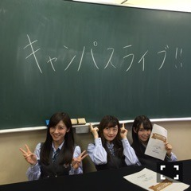

| 2016/03 13 Sun | キャンパスライブ！ グアム！個人PV！趣 味大募集！(´>∀<｀)ゝ |
ちはるーむへようこそ\( ˆoˆ )/
海外の考古学が大好きな私は、
ミステリーハンターになって、
海外に行きたい。夢です。
現地で、遺跡や文明に触れたい。
謎に直面してみたい。
昔の人が残したものほどロマンのあるものはないと思ってます。
先日、メンバー全員でグアムに行ってきました！
海外の空気に触れ、
古代遺跡の写真をグアムで検索してたら余計に
その場に行ってその空気に触れたくなりました。

グアムに行ったら、(叶わないとは思うけど)
留学に行ってみたい欲も高まりました。
英語やフランス語等の言葉をバリバリ話してたら
この上なくかっこいいだろうな！
グアムで自分の英語が少しでも通じた時の
嬉しさと言ったら物凄いものだったし
もっと英語が喋れたらもっとコミュニケーションとれただろうし
次海外行くときこそは...！って思ったよ！！
グアムにはバカンスを兼ねて、
乃木中等の撮影で行ってきました\( ˆ ˆ )/
愛未と部屋が一緒だったり
オフの日には愛未とマネージャーさん3人だけで
シーウォーカーっていう海底を歩くアクティビティを行ったり(最高に楽しかった♡)
愛未と2人でホテルのプールとか海に入って地平線をのんびり眺めたりと、
愛未と有意義な時間を過ごしてました！！
幸せな時間だったなー(﹡ˆ ˆ﹡)
また海外行きたいなー(﹡ˆ ˆ﹡)
さてさて、今日はNHKラジオ第一にて、
キャンパスライブ@福島SPでした！
昨日3/11で東日本大震災から5年。
震災当時、中学2年生だった私が
もう大学一年生も終わろうとしていて、
短いようで長かった5年。
震災について改めて、
東北の大学生の方々と一緒に
どう向き合っていくかについて考えていきました。
震災を乗り越えて、前へ向いていくこと。
震災を忘れずに、未来へ伝承していくこと。
被災地に行って、その場で感じること。
そして自分自身に何ができるのか。
たくさんの事を考えながら
この先も行動していきたいと感じました。
会場に足を運んでくださった皆さん、
ラジオを聴いてくださった皆さん、
リポートをしてくださった福島大学、東北大学、岩手大学の皆さん、
サポートをしてくださった今井アナ、
ラジオに呼んでくださったスタッフの皆さん、
本当にありがとうございましたm(_ _)m

告知タイム...( ¨̮ )( ¨̮ )( ¨̮ )♡
☆月刊エンタメ 4月号 発売中
☆BOMB 4月号 発売中
☆乃木坂ゴルフ倶楽部 楽天ショウタイムにて放送中
☆GREEN GORA vol.2 3月16日発売
花奈と、伊織と撮影したよ♡
ちょっとした対決もしました！！！
可愛い衣装と靴で、欲しくなっちゃった...( ◦˙ ˙◦ )
☆14thシングル 個人PV予告編 公開中
https://m.youtube.com/watch?feature=youtu.be&v=OUpXQkSFr_A
見てくださったかなー？？
演技に挑戦しました！
キャラの濃い出演者の方に囲まれながら
"3Fの女"を演じさせていただいてます。
節田朋一郎監督の作品を見たとき、
知らぬ間に涙が出ていました。
それくらい暖かくて、素敵な作品だったので。
一瞬で監督の作品の虜になりました！
(直接言えなかったのでブログで...)
そんな節田監督に撮っていただいた作品です。
自分の演技は不安だけど...
映像はとてつもなく素敵だと思います！
まだ私も観れていないので、発売が楽しみ♡

ひめたんが、46時間テレビで
趣味を募集してたじゃない！？
それを見てたら、私も何か新しいことを始めたいなって思ってきていて...
新しい自分に出会いたいのです。なので！
皆さんの趣味は何ですか？
もしくはオススメしたい趣味はありますか？
すごく興味ある...(｡･o･｡)ﾉ
コメント楽しみだな...(｡･o･｡)ﾉ

グアムでどーん。
スペアリブとシュリンプ。
美味しすぎた...♡
隣は安定の、愛未。
明日は録音会！似顔絵会！お茶会！
特典イベントが一気にあります( ◦˙ ˙◦ )
楽しみ♪
おやすみなさい
斎藤ちはる
コメント(403)
2016/03/13 00:00